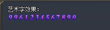

NPC界面艺术字效果 
格式:
<TextAtlas:F:N:X:Y:L>
F=WIL文件序号(详见引擎：查看-列表信息(二)-WIL资源)
N表示从文件的第几个图开始，0~9的数字图片必须连续
X和Y这两个坐标可以使图片显示的坐标更加精准.
L表示需要显示的数字或数值变量
注:艺术字的排列按素材大小依次排列，所以字体大小和间隔宽度都由素材决定，如需改变字体大小和间隔宽度只能修改素材来实现。
[@main]
#ACT
MOV N$显示数值 9961234567890
#SAY
艺术字效果：\
<TextAtlas:7:2470:0:0:<$STR(N$显示数值)>>